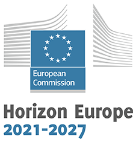
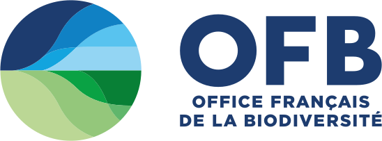

Current projects

HorizonEurope — Obsgession
Observation of Ecosystem Changes for Action (read more)
Obsgession is funded by the European Commission as a 4-years project from 2024-2027. It is coordinated by Prof. Petteri Vihervaara (Finnish Environment Institute (SYKE)) and involves 11 other academic and SME partners.
In Obsgession, our team leads WP3 on Detection, attribution, and modelling biodiversity and ecosystem changes. We are developping tools and workflow to detect and attribute biodiversity changes and apply them to sets of spatial and temporal datasets. We are co-leading together with Univ. Zurich, Task 5.1 on investigating and predicting biodiversity change in the European Alps by multi-scale, multi-modal, and multi-temporal remote-sensed and in-situ data.
People involved in the group are: A. Thomas, J. Estopinan, P. Gaüzere, A. Thomas, S. Si Moussi, S. Cerna, Philippe Choler, Matthias Grenié and VIncent Miele.
ANR REFRAME
Response-Effect FRAMEwork in plants: revealing direct and indirect pathways
REFRAME is funded by the ANR as a four-year project and is led by Cyrille Violle (CEFE-Montpellier). It involves 3 other partners. The grand challenge of the REFRAME project is to integrate ecological complexity into the response-effect framework by revealing and quantifying both direct and indirect pathways (Figure 1). We will focus on three critical ecosystem functions: primary productivity, litter decomposition, and nitrogen cycling. REFRAME aims to reformulate the response-effect framework, providing a predictive framework for biodiversity and ecosystem science, combining ecology and evolutionary biology. .
People involved in the group are: T. Münkemüller, P. Choler, S. Lavorel, M. de la Gastine, G. Poggiato, A. Saillard

ADONIS
Quantifying and attributing vegetation change in France
ADONIS is a multi-year project co-funded by the Office Français pour la Biodiversité (OFB) and we work together with the National Botanical Conservatories (CBNs). We developped tools and methods to quantify past recent vegetatino trends using the CBN retrospective data and attibute those chnages to environmental variations
People involved in the group are: Pierre Gaüzere, Romain Goury
PEPR Dynabiod
Dynamics of Terrestrial Biodiversity in the Anthropocene: Understanding to Take Action
Dynabiod aims to understand how plants and invertebrates—the cornerstones of our ecosystems—are affected by human activities and environmental changes, so that we can take faster and more effective action to conserve species and preserve the benefits of their ecosystem roles. Co-led by the CNRS (W. Thuiller) and the National Museum of Natural History (Emmanuelle Porcher & Rodolphe Rougerie), it is funded by the ANR for 8 years and 40M euro. It involves > 20 research units in France and outersea territories and more than 100 scientists and technicians.
People involved in the group are: S. Si-Moussi, V. Miele, M. Grenié, T. Munkemuller, S. Lavergne, L. Gallien, C. Penone, G. Poggiato, A. Saillard, S. Mulero, F. Boyer, V. Lefort, etc...
HorizonEurope NatureRestoreR
Guiding nature restoration through integrated ecological modelling
NatureRestoreR is funded by the European Commission as a 4-years project from 2026-2030. It is coordinated by A Schippers (Radboud Univ., Holland) and involves 12 other academic and NGO partners.
In NaturaRestoreR, our team leads WP4 on estimating the extent and condition of terrestrial habitats through a new, systematic and replicable modelling approachb. We are also involve in WP3 on estimating ecological needs of terrestrial species (together with Sapienza Univ) and WP5 on the link betweeen habitats and ecosystem services. Finally, we co-lead a task in WP7 together with Patrinat (I. Laigle and A. Carré) on the French case study restoration .
People involved in the group are: S. Si-Moussi, N. Fermon, F. Veillon, M. Guéguen
AlpiConnect
Landscape Connectivity of Iconic Vertebrate Species in Alpine Habitats.
AlpiConnect is a two--year project co-funded by the Office Français pour la Biodiversité (OFB). The AlpiConnect project aims to mobilize and synthesize all available knowledge (data and methods) on landscape connectivity for iconic vertebrate wildlife in French Alpine regions (the Alps and the Pyrenees), and to work toward integrating this knowledge into public policy.
People involved in the group are: Marie-Caroline Prima
MIAI Cluster IA - XLBiod
Explainable Latent Spaces for Biodiversity Modeling.
XLBiod is a three-year funded chair in AI, co-led by S. Si-Moussi (LECA-Grenoble) and H. Hendrikx (INRIA-Grenoble). XLBiod aims to leverage artificial intelligence to better understand biodiversity drivers and predict future impacts. We will design a framework to obtain models that transform raw data into explainable representations that are suited for downstream ecological research. More specifically, we will investigate (i) by-design explainable models, (ii) the way ecological factors (e.g., functional traits) structure representation spaces, in particular when varying the learning tasks, and (iii) the level of consistency between different views (e.g., representations of plants and invertebrates) of a same ecological site. We will thus tackle the full chain, from methodological advances in Machine Learning (ML) to new ecological insights, designing state-of-the-art ML models to process new ecological data.
People involved in the group are: V. Miele
Past projects
-
ANR - Qdiv project (2006-2009)
-
EU - ECOCHANGE (FP6 European Integrated project 2007-2011)
-
ANR – DIVERSITALP (ANR Biodiversity 2008-2011)
-
ANR – 3Worlds (ANR Intensive Calculations and Simulations 2008-2011)
-
ANR – SCION (ANR 6th Extinction 2010-2013)
-
ANR – EVORANGE (ANR 6th Extinction (2010-2013)
-
FRB – FISHCONNECT (FRB Scenarios 2011-2014)Predicting fish connectivity among marine protected areas under climate change scenarios: management implications and interplay with fisheriesThe Fishconnect project was supported by the Fondation pour la Recherche sur la Biodiversité (FRB French) as a 3 years project from 2011-2014. It was coordinated by Stéphanie Manel (LPED, Marseille)
-
Biodiversa - CONNECT (Biodiversa 2011 call - 2012-2014)Linking biodiversity CONservatioN and ecosystem services: advancing insights in tradeoffs and synergies between biodiversity, ECosysTem functioning and ecosystem service values for improved integrated biodiversity policyThe CONNECT project was supported by the ERA-NET Biodiversa network as a 3-years project from 2012-2014. It was coordinated by Peter Verburg (Univ. of Amsterdam, Netherlands).
-
ANR – METABAR (ANR Blanc 2012-2014)DNA metabarcoding for next generation biodiversity monitoringThe METABAR project is funded by the French Agence Nationale de la Recherche for a period of four years. DNA next generation sequencing technologies are advancing at a rapid pace, and they offer unique opportunities to make significant progress in biodiversity science. It is coordinated by Pierre Taberlet (LECA, France)
-
EU - VOLANTE (FP7 European Integrated project 2010-2015)Visions Of LANd use Transitions in EuropeThe VOLANTE project is supported by the The Volante project is supported by the European Commission’s 7th Framework Programme as integrated Project from 2011-2015 under the Thematic Sub-Priority Integrated resource management based on land and land-use management. It is coordinated by Bas Pedroli (ALTERRA, The Netherlands)
-
ANR – ODYSSEE (ANR International France - Romania 2014-2016)Opening new avenues to model the DYnamics of Species aSsemblages by integrating Ecology and Evolution: a case study from the mountain ecosystems of the Alps and the CarpathiansThe ODYSSEE project is supported by the Agence National pour la Recherche (French) as a 4 years project from 2014-2016. It is coordinated by Philippe Choler (LECA, Grenoble)
-
ERC - TEEMBIO (European Research Council - Starting Grant project 2012-2016)Towards Eco-Evolutionary Models of BIOdiversityThe TEEMBIO project is supported by the ERC (Starting Grant) as a 5-years project from 2012-2016. It is coordinated by Wilfried Thuiller (LECA, Grenoble).
-
Biodiversa - WhoIsNext (Biodiversa 2013 call - 2014-2017)Climate change and escaping ornamentals: Predicting the next generation of European plant invadersWhoIsNext is funded by the ERA-NET Biodiversa network as a 4-years project from 2014-2017. It is coordinated by Mark van Kleunen (Univ. Konstanz, Germany) and involves Stefan Dullinger & Franz Essl (Univ. Vienna, Austria) and Oliver Bossdorf (Univ. Tübingen, Germany)
-
CDP - Trajectories (2017-2021)Social-‐ecological trajectories of French alpine valleys under climate variabilityTrajectories is a cross-disciplinary project funded by Idex Grenoble Alpes as a 4-years project from 2017-2021. It is coordinated by S. Anquetin (IGE, Grenoble), N. Buclet (PACTE, Grenoble) and S. Lavorel (LECA, France) and involves 14 different departements/labs on the Univ. Grenoble Alpes campus.
-
IRS - Labex OSUG#2020 - MONTANE (2017-2021)Multi-trophic biodiversity and multi-functionality across Alpine EnvironmentsMONTANE is co-funded by Idex Grenoble Alpes (IRS PAGE) and the Labex OSUG#2020 as a 4-years project from 2017-2021. It is coordinated by W. Thuiller (LECA, France) and involves G. Kunstler, B. Reineking, L. Cecillon & J.-M. Monnet (IRSTEA, Grenoble), J. Poulenard & Y. Perrette (EDYTEM, Chambery) and J.-G. Valay (SAJF, Grenoble).
-
ANR - GLOBNETS (ANR Generique 2017-2021)Global biogeography of ecological networks in forest ecosystemsGlobNets is funded by the ANR Generique 2016 as a 4-years project from 2017-2021. It is coordinated by W. Thuiller (LECA, France) and involves H. Schimann and E. Marcon (Ecofog, Fench Guyana), J. Chave (EDB, Toulouse), M. Hedde (ECOSYS, Versailles) and L. Vuillon (LAMA, Chambéry), L. Zinger (IBENS, Paris)
-
ANR - OriginAlps (ANR Bilatérale France-Suisse 2017-2021)Origins, assembly and conservation of plant diversity in the European AlpsOrigin-Alps is funded by the ANR Bilatérale France-Suisse 2016 as a 4-years project from 2017-2021. It is coordinated by S. Lavergne together with W. Thuiller (LECA, France) on the French side and N.E. Zimmermann (WSL, Switzerland) on the Swiss side.
-
Biodiversa - BearConnect (Biodiversa 2015 call - 2017-2020)Functional connectivity and ecological sustainability of European ecological networks: a case study with the brown bearBearConnect was funded by the ERA-NET Biodiversa network as a 3-years project from 2017-2020. It is coordinated by W. Thuiller together with M. de Barba (LECA, France), and involves N. Balkenhol (Univ. Goettigen, Germany), A. Fedorca (National Institute for Research and Development in Forestry, Romania), N. Selva (Institute of Nature Conservation, Polish Academy of Sciences, Kraków, Poland), A. Zedrosser (Department of Environmental and Health Studies, Norway) and L. Maiorano (Univ. of Napoli, Italy).
-
ANR - EcoNet (ANR Générique 2018 call - 2019-2024)Advanced statistical modelling of ecological networksEcoNet is funded the ANR as a 4-years project from 2019-2022. It is coordinated by C. Matias (LPSM, Paris), and involves S. Robin, J. Chiquet (MIA, Paris), V. Miele, S. Dray (LBBE, Lyon), S. Kéfi, V. Dakos (ISEM, Montpellier), E. Thébault, Colin Fontaine (IEES, Paris) & F. Massol (Evo-Eco-Paleo, Lille).
-
Generating advances in modelling biodiversity and ecosystem services: statistical improvements and ecological relevance of joint species distribution models.Gambas is funded the ANR as a 4-years project from 2019-2022. It is coordinated by F.. Mortier (CIRAD, Montpellier), and involves F. Bébédet, B. Hérault (CIRAS, Montpellier), F. Gosselin, F. Laroche & J. Piffadi (IRSTEA), T. Münkemüller & W. Thuiller (LECA, Grenoble), F. Jiguet, B. Fontaine (MNHN, Paris), C. Trottier, X. Bry (IMAG, Montpellier), C. Coron (Univ. Paris Sud). .
-
Biodiversa - FutureWeb (Biodiversa 2018 call - 2019-2023)Climate and land use change threat to the vertebrate European food web structure and functioningFutureWeb is funded by the ERA-NET Biodiversa network and the Belmont Forum as a 3-years project from 2017-2020. it is coordinated by W. Thuiller (LECA, Grenoble), and involves P. Verburg (Univ. Amsterdam, NH), C. Graham & D. Karger (WSL, Switzlerland), U. Brose, B. Gauzens (iDIV, Leipzig), J. Clark (Duke, USA), A. Moilanen (NHNM, Finland), M. Harfoot (WCMC, UK), and L. Maiorano (Univ. Roma, Italy), L. Pollock (MacGill Univ., Canada). We are leading FutureWeb, but more particularly we are involved in building the metaweb of European terrestrial vertebrates, mapping interaction networks in space, developing novel trophic species distribution models, predicting the response of multi-trpphic biodiversity to change in climate and land use change, and their effects on species-based ecosystem services. Finally, we are testing and developping innovative ways of accounting for interaction networks in conservation planning. People involved in the group are: G. Poggiato, L. O'Connor, P. Gaüzere, C. Botella, J. Renaud, L. Pollock.
-
ANR - TransAlps (ANR Générique 2021 call - 2022-2025)Understanding transient dynamics of Alpine grasslands under climate warming through the lens of plant-soil interactionsTransAlps is funded by the ANR as a 4-years project from 2021-2025. It is coordinated by T. Münkemüller (LECA, Grenoble), and involves B. Reineking (INRAe, Grenoble), JC Clément (CARRTEL, Chambéry), J. Poulenard (EDYTEM, Chambéry), JG Valay (Jardin du Lautaret, Grenoble), L. Zinger (IBENS, Paris). People involved in the group are: B. Bektas, I. Calderon-Sanou, C. Lionnet, J. Renaud, M. Guéguen, A. Saillard
-
European Space Agency - EO4DIVERSITY (ESA precursor+ call - 2022-2023)Earth Observation for Biodiversity ModellingEO4DIVERSITY is funded by the ESA as a 2-y project. It is coordinated by A. Skidmore (ITC, Univ. Twente, The Netherlands), and involved W. Thuiller (LECA, Grenoble), S. Mucher & S. Hennekens (WU, Wageningen), R. Van De Kerchove (VITO, Brussels), B. Smith (Lund Univ, Lund). In EO4DIVERSITY, our group develops machine and deep-learning models to test the advantage of using high resolution satellite data (Sentinel-2) to predict EUNIS habitat types in Europe at 100m resolution and to predict invasive species. We build models of increasing complexity (until convolutional neural nets) to test how and when EO product are useful and what information they bring. People involved in the group are: S. Si Moussi, N. Le Guillarme, Y. Cartier and Y. Hu
-
ANR - PEG2 (ANR Générique 2022 call - 2023-2026)Predictive Ecological GenomicsPEG2 is funded by the ANR as a 4-years project from 2023-2026. It is coordinated by O. François (TIMC, Grenoble), and involves W. Thuiller (LECA, Grenoble), C. Galliez (LJK, Grenoble), P. Cubry (IRD, DRIAD). In PEG2, our group will develop novel methods to understand and predict species assemblages from environmental DNA (eDNA) samples. We propose to use both linear and deep latent factor regression models to model and predict species or groups of species frequency of occurrences under projected climatic conditions. Inspired by natural language processing applications, we will also implement dimension reduction methods, based on conditional variational auto-encoder models and embeddings. People involved in the group are: M. Rohr, S. Si Moussi, N. Le Guillarme, D Bystrova, I. Calderon-Sanou
-
Biodiversa - FeedBacks (Biodiversa 2020 call - 2021-2024)Feedbacks between biodiversity and climateFeedbacks is funded by the ERA-NET Biodiversa network as a 3-years project from 2021-2024. It is coordinated by N. Zimmermann & D. Karger (WSL, Zurich), and involves W. Thuiller (LECA, Grenoble), T. Hickler (BiF, Frankfurt), M. Chytry (Masaryk University, Pragua), H. Bruelheide (Halle), Seneviratne, Queiroz (Stockholm University). In FeedBacks, our team leads WP3 on modelling vegetation dynamics in the European Alps, Pyrenees and Carpathians. We parameterize our dynamic vegetation model (FATE-HD) on the three mountain systems to simulate vegetation dynamics in response to land use intensity and change in climate (both mean and extremes). We will explore time lags, functional stability and resilience. People involved in the group are: M. Guéguen, R. Patin, P. Gaüzere, A. Thomas, S. Si Moussi
-
PatriNat - OFB - French Biodiv (2022-2023)Mapping french biodiversity in spaceFrench Biodiv is a collaborative project funded by PatriNat (Y. Rejol, I. Witte), where we will harness the whole National Inventory of Biodiversity (INPN) and build machine and deep learning models to predict French biodiversity in space at 1km resolution. This project is in deep connection with NaturaConnect (WP8 - Case study). People involved in the group are: M. Guéguen, R. Patin, J. Renaud, S. Si Moussi, G. Deschamp, M. Tzivanopoulou, A. Thomas.
-
OFB - Flore Alps (2022-2023)Flore Alps is funded project by the OFB and Région SUD to explore the impacts of climate and land use change on the French Alps. The idea is to build biodiversity distribution models that model both plant species composition and community-level trait metrics. The overarching goal is then to extract species at risk due to climate change (i.e. orange list). People involved in the group are: G. Deschamp, M. Guéguen, J. Renaud, S. Si Moussi, Anaëlle Chassignolle
-
MIAI@UGA - Chair AI for Environment (2022-2023)MIAI Grenoble Alpes (Multidisciplinary Institute in Artificial Intelligence) is a large funded project by the ANR that aims to conduct research in artificial intelligence at the highest level, to offer attractive courses for students and professionals of all levels, to support innovation in large companies, SMEs and startups and to inform and interact with citizens on all aspects of AI. In this project, I co-lead a chair on AI for the environment called 'Multiscale, multimodal and multitemporal remote sensing' with J.Chanussot. In this project, we mostly test and benchmark various ways of applying deep learning algorithms to ecological questions. We have for instance developped a deep learning model to search for species names in scientific papers (TaxoNerd), and benchmark pipeline to predict soil biodiversity in the French Alps based on orthophotos. People involved in the group are: S. Si Moussi, N. le Guillarme; V. Miele
-
Designing a resilient and coherent Trans-European Network for Nature and PeopleNaturaConnect was funded by the European Commission as a 4-years project from 2022-2026. It was coordinated by P. Visconti (IIASA, Vienna) and involved 14 other academic and NGO partners. In NaturaConnect, our team led WP3 on biodiversity modelling and scenarios where we predicted the overall biodiversity in Europe (plants, insects, soil biodiversity, vertebrates) under current and future conditions. We developed several novel species distribution models that incorporate trophic information, links between plants and insects, etc... We were also involved in WP4 on modelling ecosystem services (based on species providers), WP5 scenario building, and WP8 where we led the French case study in collaboration with the OFB & PatriNat. People involved in the group were: A. Thomas, G. Deschamp, M. Tzivanopoulou, M. Guéguen, L. O'Connor, P. Gaüzere, S. Si Moussi, J. Renaud, Y. Hu.